Está muito grande este galo, está? – perguntou o Arrelia apontando para a testa.
Marisa, que estava mais perto, respondeu-lhe:
- Não está Pequeno, mas também não está muito grande.
- O que foi que causou esse galo, Arrelia? – quis saber Jaci.
- Você não faz ideia – disse ele esfregando a testa. Foi uma ferradura!
- Você levou um coice? – espantou-se a menina.
- Não, não foi coice. A ferradura caiu na minha cabeça.
As outras crianças o olhavam também com ar interrogativo. O Arrelia tratou de explicar:
- Hoje acordei quando ia começar a amanhecer. Sentei-me aqui no terraço e fiquei apreciando o nascer do Sol. Ali naquela árvore um tico-tico começou a cantar e pus-me a escutá-lo, enternecidamente. Que beleza! Foi aí que aconteceu. Senti uma pancada que me deixou tonto. Se eu não tivesse a cabeça dura . . . Nhô Rogério ia passando e percebeu que alguma coisa acontecera.
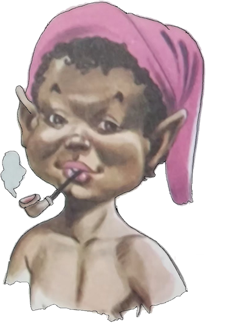
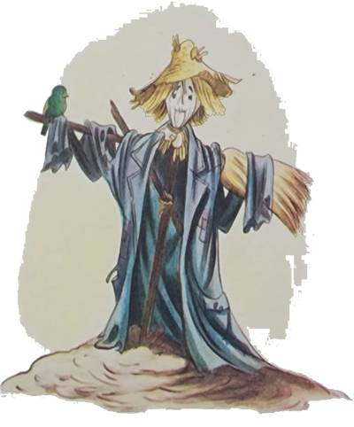
Nhô Rogério era o dono do sítio onde o Arrelia e a sua turminha estavam hospedados durante esta estória.
- Ele correu para mim – continuou o Arrelia – assustado com o que podia haver-me acontecido. Descobrindo a causa e vendo que não tinha sido nada de grave, ele providenciou um pouco de sal e água para por no galo. Depois comentou:
- Que azar, Seu Arrelia. Ser atingido por uma ferradura que justamente devia dar sorte! Mas não é de estranhar, não. Aqui tem acontecido muita coisa estranha. Tudo por causa do saci que cismou de aparecer neste sítio!
- Saci? – perguntei. Apareceu um saci? Quando? Como foi?
Nhô Rogério disse que precisava sair, mas que à noite contaria sobre o tal saci que acreditava ter aparecido no sítio. Não vejo a hora que anoiteça para ouvir a estória. Estou com uma “vontaude”. . .
O Arrelia e as crianças saíram a passeio. Depois de uma boa caminhada, pararam a fim de admirar um monjolo. Continuaram. De repente, Carlinhos fez sinal para que parassem e falou o mais baixo que pode:
- Cuidado! Olhem lá! Estão vendo? O que faz aquele homem sozinho? Vejam o tamanho dele! Deve ser um gigante!
O Arrelia olhou a estranha figura demoradamente e esclareceu:
- Que gigante, Carlinhos? É um espantalho! Deve ter alguma plantação ali, e o espantalho serve para manter os pássaros à distância. Vamos até lá?
Tomaram a direção do espantalho que se sobressaía ao longe. Deixaram o sítio de Nhô Rogério e entraram em outro , repleto de plantações. Chegaram perto do espantalho e viram que ele estava guardando uma linda plantação de tomateiros carregados de enormes frutos vermelhos. Tão grandes que o Arrelia comentou:
- Será que aqui há mesmo gigantes? Estes tomates devem ter sido plantados por eles! Como são grandes!
Iberê olhou para Sérgio e começou a rir como um louco. Ria de se dobrar.
- Mas o que está acontecendo? – perguntou o Arrelia. Ficou doido? Vai morrer de tanto rir!
Não foi com pouco esforço que o menino conseguiu explicar:
- Já viu como esse espantalho é parecido com o Sérgio? É a cara dele! Nunca vi coisa igual!
Quando Sérgio ouviu a comparação, agarrou o tomate que estava mais perto e arremessou-o contra Iberê. Mas Iberê abaixou-se, e o tomate acertou em cheio o rosto de Carlinhos. Este não custou muito a recuperar-se da surpresa, arrancou outro tomate que partiu como uma bala na direção de Sérgio e atingiu a testa de Jaci. A menina também não perdeu tempo e entrou na batalha. Logo todos estavam na guerra, inclusive o Arrelia, que levara uma tomatada bem no galo. Encontravam-se em plena luta quando ouviram alguém gritar: “Não! Chega! Parem com isso!”
- Ih! Deve ser um dos gigantes que mora maqui! – disse o Arrelia arregalando os olhos.
Logo um silêncio profundo substituiu a algazarra. Do meio dos tomateiros surgiu um homem. Não era um gigante. Era um japonês e estava louco da vida.
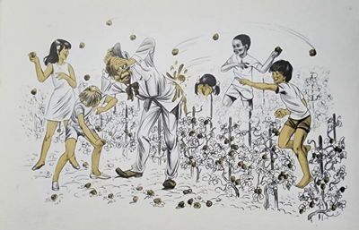
- O que está acontecendo? – perguntou ele. Olhem o estrago que fizeram! Que judiação! Não acredito no que vejo!
- Não precisa ficar “braubo”! – pediu o Arrelia. Eu pago o prejuízo!
O japonês ficou mais bravo ainda:
- Não quero que pague nada! Só quero que vejam o que fizeram! Tomates cuidados com tanto carinho, os mais perfeitos que já produzimos, foram estragados por vocês! Olhem quantos amassados no chão! E justamente estes tomates que se destinavam a uma exposição! Tudo perdido!
- Mas acalme-se, homem! – pediu o Arrelia. Ainda sobraram uns três tomates! Olhe aí!
- E o que vou fazer com esses? São justamente os menores! Podem acabar com eles! Podem! – gritou o japonês e foi embora com as mãos na cabeça.
- Puxa! O homem ficou daquele jeito! – exclamou Jaci. Será que gostava tanto assim dos tomates?
O Arrelia suspirou e respondeu:
- Você não faz ideia. Os japoneses são muito apegados à terra. A colônia japonesa merece nossa admiração pelo muito que tem feito para o nosso progresso. Bem, vamos embora que estou com vergonha do que causamos.
Depois da Aventura, voltaram ao sítio de Nhô Rogério. Separaram-se e cada um foi procurar uma distração. Carlinhos conseguiu uma peneira e foi apanhar peixinhos numa pequena lagoa que havia perto da casa do sítio. Logo na primeira peneirada saiu uma rã que saltou assustando o menino. O grito que ele deu trouxe os outros de volta.
- É, não tem jeito mesmo – disse o Arrelia depois de ouvir o sucedido. É melhor ficarmos todos juntos antes que aconteça alguma coisa de grave.
Sérgio viu algo adiante e perguntou ao Arrelia:
- O que aquela mulher está fazendo na porta daquela casa?
Seguiram todos para o lugar.
- Ah! Ela está fiando numa roca! É um dos “trabaulhos” mais antigos que existem! Há quanto tempo eu não via uma! – disse entusiasmado o Arrelia.
Ficaram vários minutos admirando o trabalho da fiandeira. Satisfeitos, continuaram a vagar pelo sítio, admirando-se a cada passo.
Já era noite quando Nhô Rogério voltou.
- Que dia! – resmungou ele. Nada deu certo! Nem vou jantar! Não há dúvida de que anda saci neste sítio. Tudo está saindo errado!
- A propósito – interrompeu o Arrelia – o senhor ficou de falar sobre o saci. O senhor o encontrou, é?
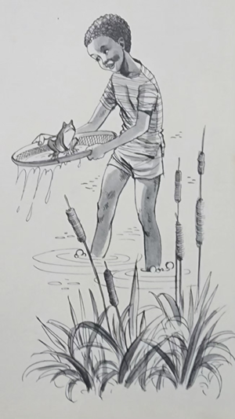
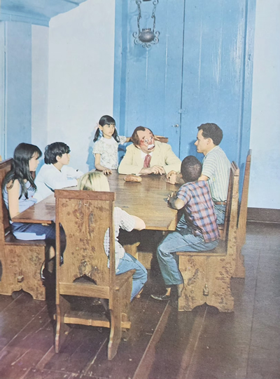
Seguiram todos para dentro da casa e acomodaram-se na sala de jantar. Como já estava escuro e no sítio não havia luz elétrica, Nhô Rogério acendeu o lampião de querosene colocado em cima da mesa e tratou de satisfazer a curiosidade do Arrelia:
- Para ser franco, ainda não consegui ver o saci pessoalmente. Porém muitos já viram o diabinho. Não é difícil a gente saber quando tem saci. Os sacis repetem quase sempre as mesmas diabruras e gostam de arrasar a vida da gente. Como todos sabem, o saci é um negrinho de uma perna só, tem as mãos furadas, usa um barrete vermelho e está sempre segurando um pitinho para o qual pede fumo a quem quer que encontre. Costuma jogar nos buracos o dedal das costureiras, faz o feijão queimar, atiça os cachorros, dá nó no rabo dos cavalos, derruba os cavaleiros, provoca brigas . . .
Hoje, por exemplo, nada me deu certo. Caí do cavalo, saiu uma briga entre alguns de meus empregados que não foi brincadeira . . .
Fazia tempo que não aparecia um saci nesta redondeza. Agora não vai ser fácil a gente viver, não.
O Felício, um dos homens do sítio, teve uma Aventura com o saci que até hoje não esquece. E olhem que já faz tempo. Eu havia mandado vários empregados construírem um barracão num lugar bem longe daqui. O Felício era o chefe deles. Prepararam uma clareira e começaram a construção. Como era distante, resolveram todos dormir lá mesmo até que tudo ficasse pronto.
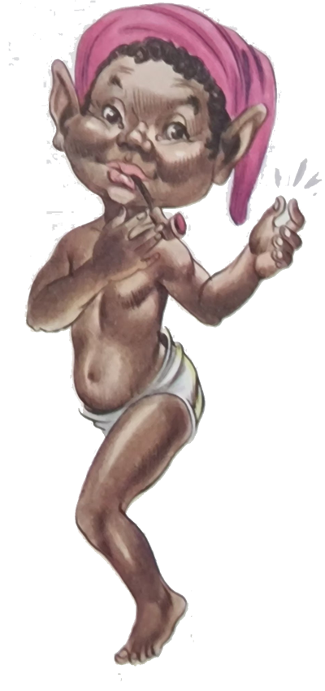
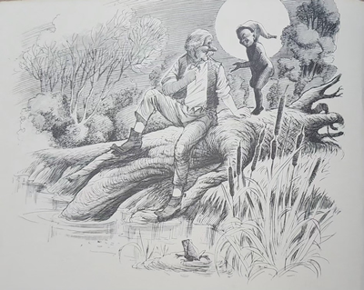
Uma noite, enquanto os outros homens se divertiam jogando e bebendo perto de uma fogueira, o Felício resolveu dar umas voltas, aproveitando o luar. Logo adiante, sentou-se num grosso tronco de ipê caído à beira de um riacho, preparou o fumo, acendeu o pito e ficou ali completamente esquecido da vida. Foi quando ouviu uma vozinha dizer: “Moço, tem um pouco de fumo aí?” Ele pensou que fosse um dos homens e virou a cabeça despreocupadamente. Deu com o saci. Sorria e segurava o cachimbinho esperando o fumo. Os cabelos do Felício ficaram espetados que nem os fios de uma vassoura. Quis gritar mas havia perdido a voz. O saci chegou mais perto e disse:
- Não tenha medo, meu amigo. Só quero um pouco de fumo.
Carlinhos interrompeu a narração de Nhô Rogério:
- Puxa! – exclamou ele dirigindo-se ao Arrelia. Então o saci deve ser parente do caipora. Os dois gostam de pedir fumo, não é mesmo? Será que eles não tem dinheiro?
Todos deram risada da dedução do menino.
- Já conhecem a estória do caipora? Muito bem! – disse Nhô Rogério e prosseguiu:
- O Felício fez um esforço danado e conseguiu tirar do bolso o pedaço de fumo.
- Aqui está! – disse ele ao saci, mal conseguindo falar.
- Assim não serve – respondeu o diabinho. Tem de ser picado pois não tenho canivete.
Por sentir medo de irritar o saci, ele começou a picar o fumo. Já fizeram ideia? Tremendo como estava!
Depois de muito sacrifício, o Felício deu o fumo ao saci.
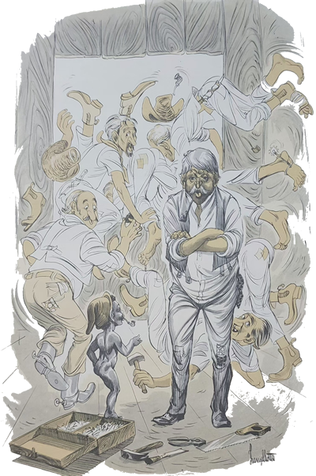
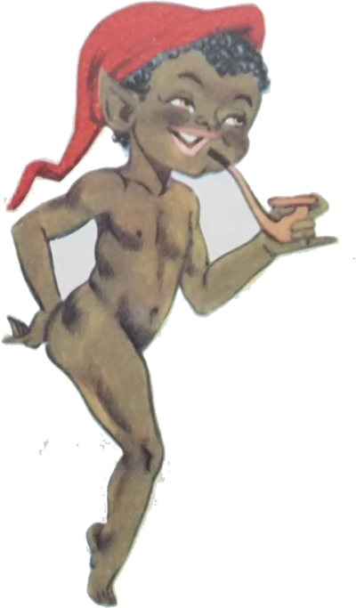
- Encha o pito!
O pobre do homem fez o que o diabinho queria.
- Agora acenda! – ordenou ele.
O pito foi aceso. O saci começou a tirar baforadas com toda a satisfação. Passados alguns minutos, o danado chegou mais perto do Felício e perguntou o que ele estava fazendo tão longe de casa. Ouviu a explicação atentamente, deu uma risada bem grande e disse:
- Então vocês trabalham com madeira, não é mesmo? Pois isso é justamente o que eu estava procurando.
- Mas para quê? – perguntou o Felício.
O saci assumiu um ar muito importante e esclareceu:
- Olhe, vou confessor uma coisa: às vezes sinto vontade de ser como as pessoas e ter duas pernas, entende?
- E daí? Também há pessoas de uma perna só, e até sem pernas – disse o Felício, sem compreender a intenção do saci.
- Está certo! – respondeu o capeta, já de cara feia. Mas normalmente não são assim. E quando não tem pernas podem usar muletas ou pernas artificiais. O que interessa é que nós, os sacis, nascemos sempre com uma perna só e não temos possibilidade de fazer muletas ou pernas artificiais. Eu pelo menos estou cansado de ser assim e quero uma perna postiça.
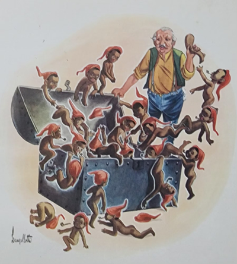
- Ah! – exclamou o Felício, compreendendo agora a intenção do saci. Você quer que eu lhe faça uma perna de madeira, não é mesmo?
O saci disse que de fato queria uma perna feita de pau, mas que fosse igualzinha à sua perna verdadeira. O Felício percebeu de pronto que não ia ser fácil, e propôs fazer uma ou duas muletas. O diabinho ficou bravo e começou a soltar baforada atrás de baforada.
- Nada disso! – exclamou ele. Quero uma perna! Nada de muletas! Trate de fazer uma perna como eu quero ou não darei mais sossego a você e aos seus companheiros. Daqui a três dias irei ver se já está pronta, entendeu?
Em seguida, o saci saiu pulando e sumiu no meio do mato. O Felício voltou ao barracão, que já estava quase pronto, e contou aos companheiros o acontecido. Uns acreditaram, outros acharam que tinha sido visão . . . O Felício resolveu esquecer o caso. No terceiro dia após o encontro com o saci, quando os homens estavam em pleno trabalho viram aquele menino de barrete vermelho surgir à porta do barracão. Quando deram com ele foi um pandemônio. Vocês nem podem imaginar. Um empurrava o outro, caíam, levantavam-se, e acabaram saindo todos pela abertura onde ia ser colocada a janela. Apenas o Felício não fugiu. Primeiro porque já conhecia o saci, e segundo porque sendo um homem de responsabilidade achou que não podia abandonar o barracão, já que era o chefe.
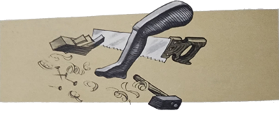
- O que você quer? – perguntou o Felício com a voz um tanto trêmula.
- Ora, ora. Então não sabe? – disse o saci, com ar de pouco caso. Vim buscar a perna-de-pau, lembra-se? Não vá dizer que ainda não está pronta.
Pobre do Felício. Atrapalhou-se todo, gaguejou, e só com muito esforço conseguiu explicar que nem havia pensado no assunto. O saci resmungou, xingou, mandou o infeliz encher seu cachimbo de fumo pediu fogo e foi embora não sem dizer antes que ia voltar dentro de três dias. O Felício saiu por ali à procura dos homens. Gritou um tempão até conseguir reunir todos outra vez. Eles porém não queriam ficar mais no barracão. Não queriam nada com o saci. Fazer uma perna para ele? Nem sonhando! Aí o Felício disse:
- Ele prometeu voltar dentro de três dias. Se trabalharmos com vontade, em dois dias terminaremos o serviço e lhe pregamos uma peça. Que tal?
Os outros acharam interessante pregar uma peça no diabinho e concordaram. Recomeçaram a trabalhar como loucos. Mas o saci percebeu a intenção deles e era uma vez. O serviço não andava. Ao contrário, ficou atrasado. Os pregos desapareciam, os homens martelavam os próprios dedos, encontravam, pela manhã, suas roupas amarradas com nós tão fortes como apenas o saci pode fazer. Os dias se passaram, e o trabalho não andou nem um pouco. Novamente o saci apareceu e foi a mesma coisa: os homens fugiram e custaram a ser encontrados. Ele deu mais três dias para que a perna fosse feita, e desta vez o Felício levou a coisa a sério. Enquanto os homens trabalhavam, ele pôs mãos à obra e conseguiu uma perninha muito bonita, toda pintada de preto.
No dia marcado o saci voltou e ficou muito contente. Todos suspiraram aliviados. Mas pensam que o capetinha deu-se por satisfeito? Que nada! Disse que agora desejava uma perna para cada saci de sua família. Não esperou resposta, deu um assobio, e logo o barracão ficou cheio de sacis. Eram centenas e centenas. É claro que o Felício ficou sozinho. Não vendo outra saída, ele concordou em fazer pernas-de-pau para todos. Porém, como ia levar anos, queria saber quais os sacis que iam ser atendidos primeiro. Deu uma confusão daquelas entre os diabinhos. Nenhum queria ficar por último.
Sabem como o Felício resolveu a situação?
- Não “fauço” ideia – respondeu o Arrelia coçando a cabeça.
As crianças pediram a Nhô Rogério que contasse logo, e ele esclareceu:
- O Felício viu uma enorme arca que haviam trazido para deixar no rancho e teve uma ideia. Dirigiu-se ao saci-chefe:
- O melhor modo de resolver quais serão os primeiros é este.
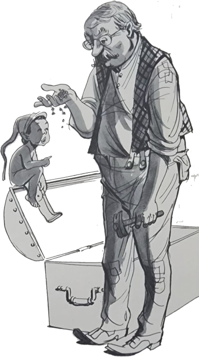
Pegou um punhado de feijão e esparramou os grãos no fundo da arca. Depois disse ao saci-chefe que aqueles que pegassem mais grãos seriam os primeiros. Todos os sacis concordaram, e a um sinal do saci-chefe mergulharam na arca como se fossem um só. Mas o Felício havia esquecido uma coisa importante: o saci que tinha recebido a perna não via interesse em disputar com os outros e continuou onde estava, segurando a perninha de madeira. O Felício não perdeu tempo. Tirou-lhe da mão a perna-de-pau e atirou com ela para dentro da arca. Coitado do saci. Nem piscou e foi atrás da perna. O Felício deu um pulo e fechou a arca. Pronto. Não tinha mais nenhum saci. Chamou os homens e levaram a arca o mais longe que puderam. Desde então nenhum saci apareceu por estas bandas. Agora ando cismado que tem algum saci no sítio. Sabem qual é o meu medo? Como faz muitos anos que foram aprisionados pelo Felício, receio que a arca tenha ficado podre. Se isto aconteceu, os sacis estão livres outra vez. E ai de nós. Salve-se quem puder que eles vem com vontade de se vingar.
- Olhe, Nhô Rogério – disse o Arrelia. Tenho uma ideia salvadora.
Nhô Rogério animou-se:
- Verdade? Diga logo!
- Por que o senhor não abre uma fábrica de pernas-de-pau?
- Francamente! – surpreendeu-se o sitiante. Uma coisa tão grave e o senhor ainda faz graça? Tomara que encontre um saci!
- Não brinque! – exclamou o Arrelia, levantando-se. Ainda o “danaudo< pode cismar que a minha “bengaula” é uma perna-de-pau! Já pensou?/p>
No dia seguinte nossos amigos seguiram para o litoral, onde terminariam a excursão.